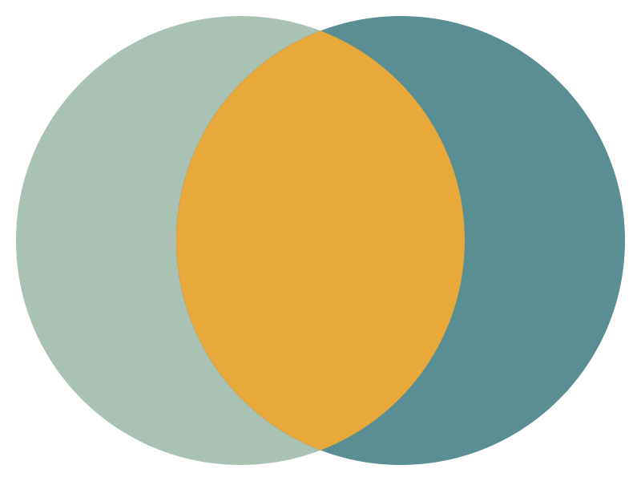
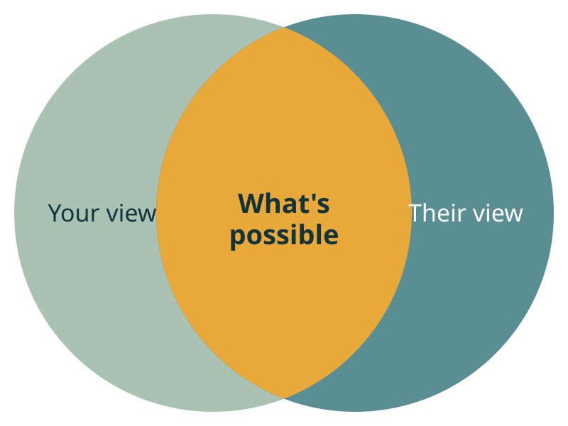
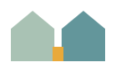

Brand
Brand assets
Standalone files with colors baked in, so they work outside the website (slides, print, social). On the site itself the same shapes are drawn inline so they can animate and follow the CSS tokens. If you change a shape, change it in both places.





Ready · SVG (live text)Venn — labeledimages/brand/illustrations/venn-common-ground-labeled.svgDownload SVG





To make
Not created yet. Each needs exporting from a design tool (Figma, Illustrator) because it either uses outlined type or is a raster size the site expects.
| Asset | Format & size | File name | Notes |
|---|---|---|---|
| Wordmark — horizontal | SVG (text outlined) | logo/sdm-wordmark.svg | Mark + “SD Mediates” in Bricolage Grotesque 700. Gap between mark and text ≈ 0.55× the text height (matches the site header). |
| Wordmark — reversed | SVG (text outlined) | logo/sdm-wordmark-reversed.svg | Mist text, reversed mark, for the ink background. |
| Wordmark — stacked | SVG (text outlined) | logo/sdm-wordmark-stacked.svg | Mark above text, centered. For square spaces (social avatars, print). |
| Logo PNGs | PNG, transparent, 1× + 2× | logo/sdm-wordmark@2x.png etc. | For tools that won't take SVG (email signature, Google Workspace, Stripe, LinkedIn). |
| Favicon PNGs | PNG 32×32, 48×48 | favicon-32.png, favicon-48.png | Export from sdm-favicon.svg. Fallback for older browsers and Google search results. |
| Apple touch icon | PNG 180×180, no transparency | logo/apple-touch-icon.png | Stand-in live (rendered from the favicon). Replace with a design-tool export of the same name. Export from sdm-favicon.svg on a solid mist square (iOS adds its own rounded corners). |
| Social share image | PNG or JPG 1200×630 | og-image.png | Stand-in live (Venn + headline + wordmark on mist). Replace with your own version of the same name and size. Shown when the link is shared (iMessage, LinkedIn, Slack). Suggest: Venn + “Less me vs. you. More us vs. the problem.” + wordmark on mist. |
| Social avatar | PNG 400×400 | sdm-avatar.png | Stacked wordmark or mark on mist, for profiles. |
| Email signature logo | PNG ≈ 300×80 (@2x) | sdm-email-sig@2x.png | Horizontal wordmark for the hello@ signature. |
| Process step icons (optional) | SVG | icons/step-1…4.svg | Steps are currently CSS numbered circles. Only needed if you want them in slides or handouts. |
Voice & tone
Warm, plain and collaborative. Mediation framed as a design sprint people do together, not a legal fight. Lower the temperature; name needs and possibilities rather than sides and winners.
Do
- “Less me vs. you. More us vs. the problem.”
- “I guide the conversation and help you design what comes next.”
- Use design words: map, explore, shape, try, roadmap, first version.
- Talk about views, needs and what's possible.
- Write in the first person (“I”) and talk to the reader (“you”).
Don't
- “Settle it out of court.” / “Avoid litigation.”
- Sides, parties, opponents, disputes, cases, winning.
- Legal or clinical jargon unless it's explained (e.g. “caucus” is OK with “1:1 meeting” next to it).
- Urgency or fear: “Before it's too late!”
- Promise outcomes. Mediation is voluntary and people design their own result.
Naming
| Use | Not | Notes |
|---|---|---|
| SD Mediates | SDMediates, SD mediates, SDM | Two words, capital S D M. “SDM” only in file names. |
| Shelton Davis, MID | Shelton Davis M.I.D. | Credential after a comma, no periods. |
| intro call | consultation, free consult | Always “free 20-minute intro call” on first mention. |
| Families in transition · Teams & workplaces · Partners & co-founders · Neighbors & communities | Family law, workplace disputes, business disputes | The four service names. Use the same words in the form dropdown. |
| Intro call → Planned listening session → Map & explore → Shape & try | — | The four process steps, in sentence case. |
| hello@sdmediates.com | — | Public contact address. |
| SD Mediates, an Empathy Lab, Inc. Company | — | Legal line for footers and documents. |